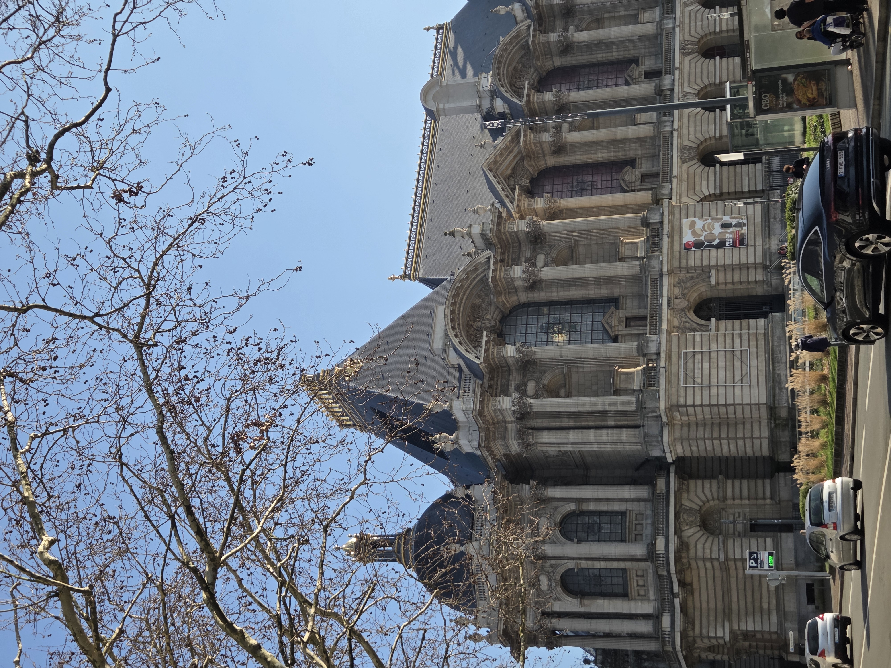
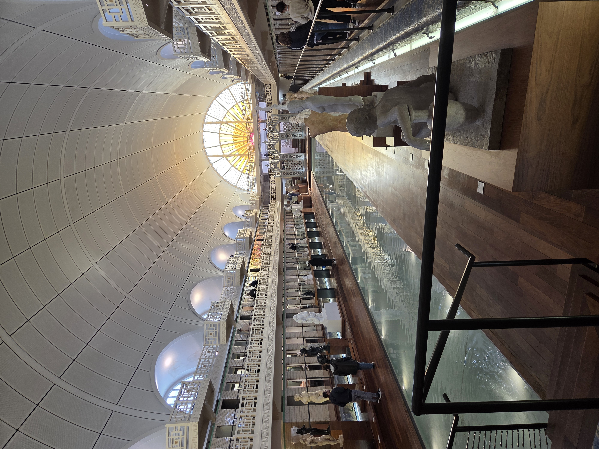
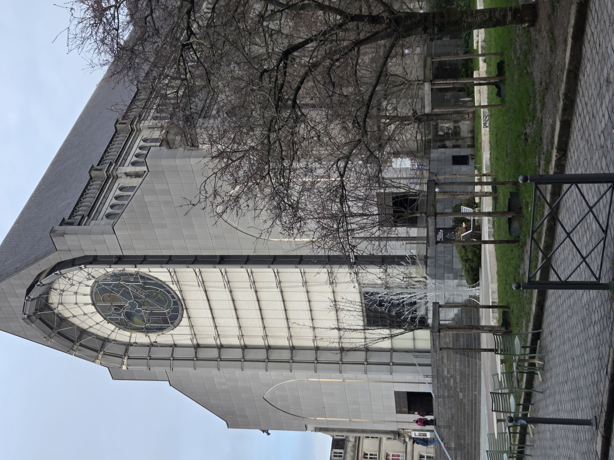
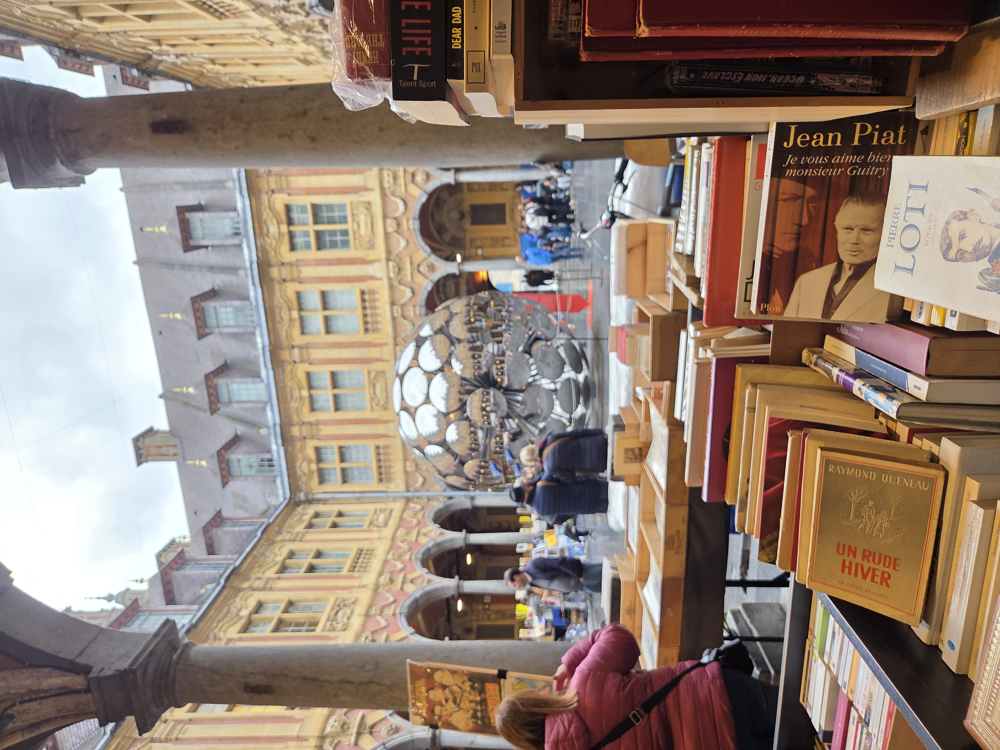
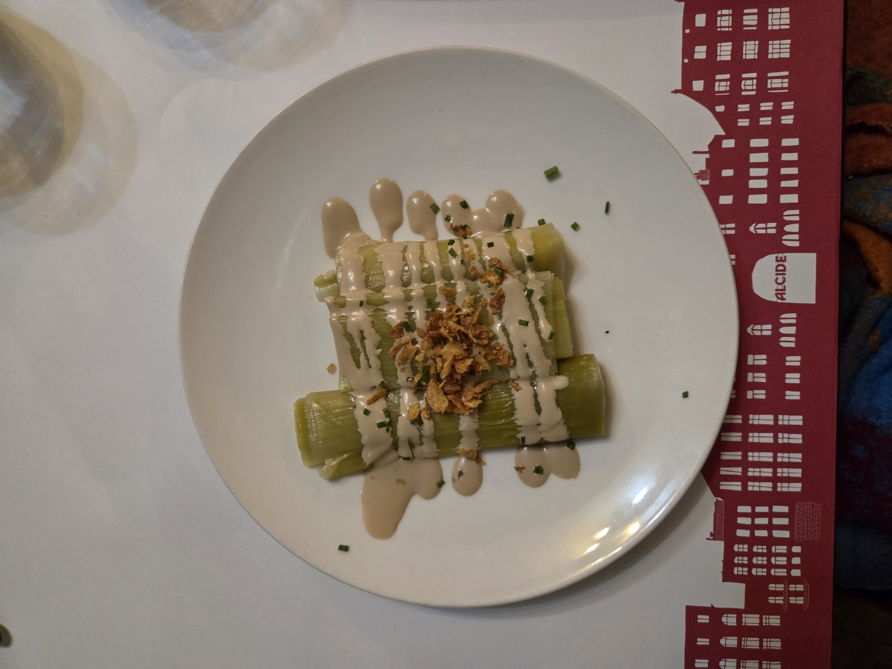
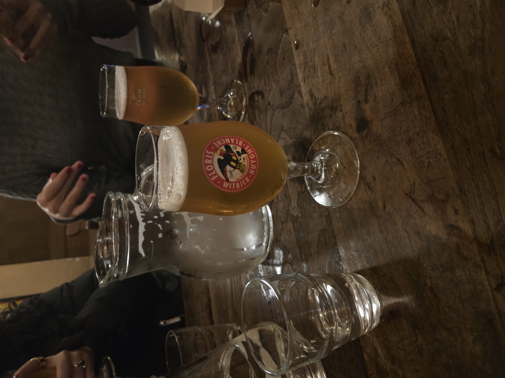
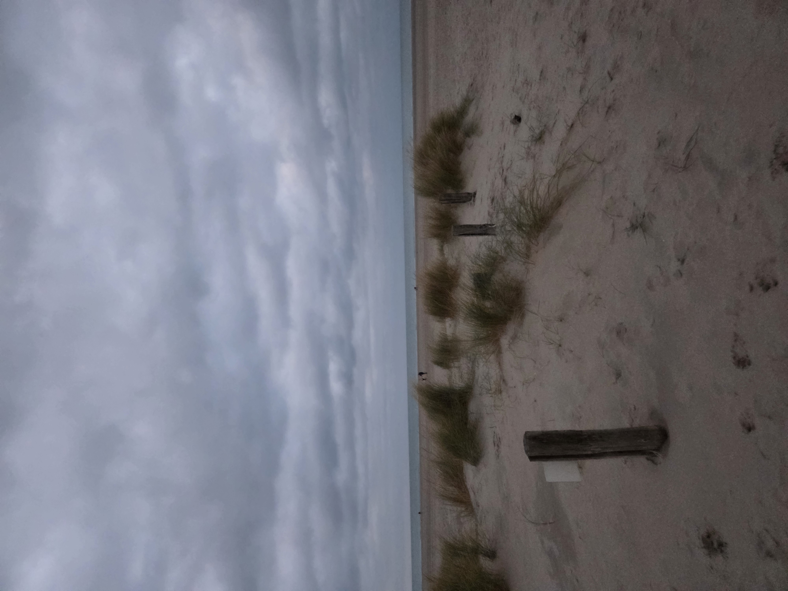

A 19th century building displaying 8 centuries of European art.
La Piscine
A former Art-Deco pool in the heart of Roubaix, displaying sculptures and paintings from the 19th and 20th centuries.
L'Hospice Comtesse Museum
A Flemish history museum housed within an 800-year-old former hospital.
Arab World Institute
A museum of Arab cultures housed in Tourcoing's former swimming school.

Palais des Beaux Arts, image taken by the web developer.

La Piscine, image taken by the web developer.
Architecture
Villa Cavrois
An iconic 1932 chateau and magnum opus of architect Robert Mallet-Stevens, this home exemplifies modern design.
Notre Dame de la Treille
A neo-Gothic cathedral that began construction in 1856, only to be finished in 1999, when the modern facade was added.
La Vieille Bourse
The Old Stock Exchange of Lille dates back to the mid-17th century and is one of the most beautiful buildings in Lille.
Town Hall and Belfry
Lille's town hall belfry is the tallest in Europe and features iconic Art Deco architecture.
La Citadelle
An ancient star-shaped military fortification designed by the famous Marquis de Vauban and built after Lille became part of France in 1667.

Notre Dame de la Treille, image taken by the web developer.

Vieille Bourse, image taken by the web developer.
Food and Drink
Visit an estaminet.
Estaminets serve regional food and are known for their warmth and traditional decoration.
Visit a brasserie.
Beer has been a staple of Lille for over a thousand years, and local breweries (brasseries in French) have continued the tradition through the modern day.

Image taken by the web developer.

Image taken by the web developer.
Regional Highlights
City
Distance From Lille
Description
Arras
40 minutes
A city known for its belfry, Christmas Market, and underground covers for Allied forces in World War 1.
Dunkirk
1 hour
A seaside city most famous for its beaches and being the location of Operation Dynamo in World War 2.
Bruges
1 hour
A Belgian UNESCO World Heritage city an hour from Lille known for its Flemish architecture and canals.

A beach in Dunkirk, image taken by the web developer.The Arras Christmas Market, image taken by the web developer.